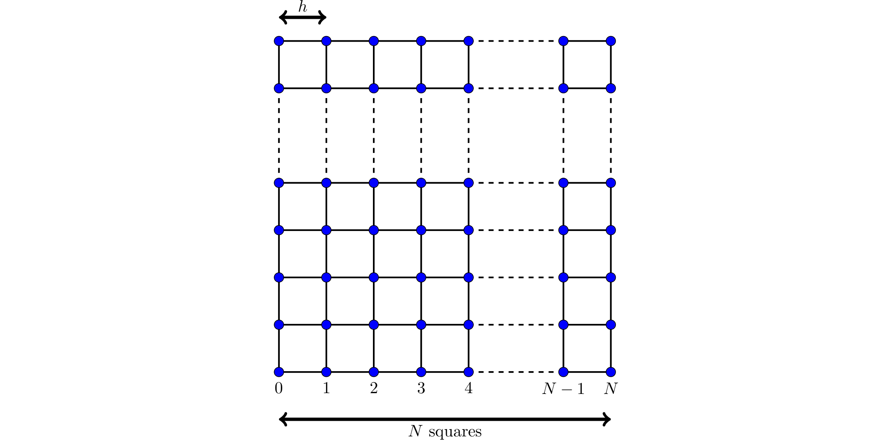

Assignment 4 - Solving a finite element system
Contents
Assignment 4 - Solving a finite element system#
This assignment makes up 30% of the overall marks for the course. The deadline for submitting this assignment is 5pm on Thursday 1 December 2022.
Coursework is to be submitted using the link on Moodle. You should submit a single pdf file containing your code, the output when you run your code, and your answers to any text questions included in the assessment. The easiest ways to create this file are:
Write your code and answers in a Jupyter notebook, then select File -> Download as -> PDF via LaTeX (.pdf).
Write your code and answers on Google Colab, then select File -> Print, and print it as a pdf.
Tasks you are required to carry out and questions you are required to answer are shown in bold below.
The assignment#
Mathematical background#
In this assignment, we are going to solve a Helmholtz wave problem:
As our domain we will use the unit square, ie \(\Omega=[0,1]^2\).
The finite element method is a method that can approximately solve problems like this. We first split the square \([0,1]^2\) into a mesh of \(N\) squares by \(N\) squares (or \(N+1\) points by \(N+1\) points - note that there are \(N\) squares along each side, but \(N+1\) points along each side (watch out for off-by-one errors):

As shown in the diagram, we let \(h=1/N\).
The (degree 1) finite element method looks for an approximate solution by placing an unknown value/variable at each point, and approximating the solution as some linear combination of the functions \(1\), \(x\), \(y\) and \(xy\) inside each square. Re-writing the problem as an integral equation (and doing a bit of algebra) allows us to turn the problem into the matrix vector problem
(We do not need to go into details of how this method is derived, but if you’re curious, the first chapter of Numerical Solution of Partial Differential Equations by the Finite Element Method by Claes Johnson gives a good introduction to this method.)
Let \(\mathbf{p}_0\), \(\mathbf{p}_1\), …, \(\mathbf{p}_{(N-1)^2-1}\) be the points in our mesh that are not on the boundary (in some order). Let \(x_0\), \(x_1\), …, \(x_{(N-1)^2-1}\) be the values/variables at the points (these are the entries of the unknown vector \(\mathbf{x}\)).
The entries \(a_{i,j}\) and \(b_j\) of the matrix \(\mathrm{A}\) and vector \(\mathbf{b}\) are given by
TODO: \(k=5\), \(g=\sin(3x+4y)\)
Part 1: creating the matrix#
Write a function that takes \(N\) as an input and returns the matrix \(\mathrm{A}\). The matrix should be stored using an appropriate sparse format.